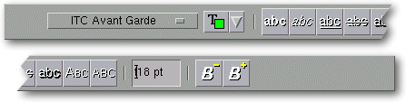
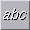
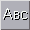
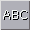

<!-- Documentation XQuad (c)1995-2000 AXENE contact axene@axene.org>
<html>

<head>
<title>Horizontal Toolbar: &quot;Font Manipulations&quot;</title>
</head>

<body BGCOLOR="#FFFFFF" BACKGROUND="Images/back.gif" TEXT="#000000">

<p ALIGN="right">  </p>

<p><br>
<br>
The Font Manipulation toolbar quickly alters the appearance of characters displayed in
worksheet cells. The user can change fonts, font features (bold, italic, underline, etc.),
as well as text size and color.<br>
<br>
</p>

<hr>

<p align="center"><br>
 <br>
<small><i>Screen shot: Font Manipulations Horizontal Toolbar.</i></small></p>

<p><br>
</p>

<hr>

<p><br>
</p>

<h3>First section of the toolbar:</h3>

<ul>
  <li><a NAME="family_itemlist">The pulldown list lets the user <strong>change fonts</strong>
    in all selected cells. The elements on this list come from the font section of the
    configuration files. When fonts are changed, the selected cells retain the previous font
    size and features (bold/italic) if the new font permits.</a><br>
    &nbsp;</li>
  <li> <a NAME="font_colorlist">The
    Color List <strong>selects the font color</strong> for the selected cells. </li>
</ul>

<p><br>
</p>

<h3>SSecond section of the toolbar:</h3>

<ul>
  <li> </a><a NAME="bold_icon">The
    first button <strong>puts the selected cell's contents in bold</strong>. This button is
    not available if the current font does not support bold text. This button is engaged
    whenever the active cell uses bold. Clicking when the button is already engaged removes
    bold features from the selected cells.</a><br>
    &nbsp;</li>
  <li> <a NAME="italic_icon">The
    second button <strong>puts the selected cell's contents in italics</strong>. This button
    not available if the current font does not support italic text. This button is engaged
    whenever the active cell uses italics. Clicking when the button is already engaged removes
    italic features from the selected cells.</a><br>
    &nbsp;</li>
  <li> <a NAME="underline_icon">The
    third button <strong>puts the selected cell's contents in underline</strong>. This button
    is engaged whenever the active cell uses underline. Clicking when the button is already
    engaged removes underline features from the selected cells.</a><br>
    &nbsp;</li>
  <li> <a NAME="stroke_icon">The
    third button <strong>puts the selected cell's contents in strike-through</strong>. This
    button is engaged whenever the active cell uses strike-through. Clicking when the button
    is already engaged removes strike-through features from the selected cells.</a><br>
    &nbsp;</li>
  <li> <a NAME="shadow_icon">The
    third button <strong>puts the selected cell's contents in shadow</strong>. This button is
    engaged whenever the active cell uses shadow. Clicking when the button is already engaged
    removes shadow features from the selected cells.</a><br>
    &nbsp;</li>
  <li> <a NAME="smallcaps_icon">The
    third button <strong>puts the selected cell's contents in small caps</strong>. This button
    is engaged whenever the active cell uses small caps. Clicking when the button is already
    engaged removes small caps features from the selected cells.</a><br>
    &nbsp;</li>
  <li> <a NAME="bigcaps_icon">The
    third button <strong>puts the selected cell's contents in upcase</strong>. This button is
    engaged whenever the active cell uses upcase. Clicking when the button is already engaged
    removes upcase features from the selected cells.</a></li>
</ul>

<p><br>
</p>

<h3>Third Section of the Toolbar: </h3>

<ul>
  <li><a NAME="size_textfield">The <i>Size</i> text field <strong>defines font size</strong>
    for the selected cells. This measure corresponds to the font's height and is expressed in
    typographic points between 1 and 1000 pts.</a></li>
</ul>

<p><br>
</p>

<h3>Fourth Section of the Toolbar: </h3>

<ul>
  <li> <a NAME="inc_size_icon">The
    first button increases the selected cell&#146;s font size. The size is enlarged in
    pre-defined increments. These increases enlarge cell fonts by one increment. Font size
    cannot exceed 1000 pts.</a><br>
    &nbsp;</li>
  <li> <a NAME="dec_size_icon">The
    second button reduces the selected cell&#146;s font size. The size is reduced in
    pre-defined increments. This function reduces cell fonts by one increment. Font size
    cannot fall below one (1) point.</a></li>
</ul>

<p><br>
</p>

<hr>

<p ALIGN="right"></p>
</body>
</html>
